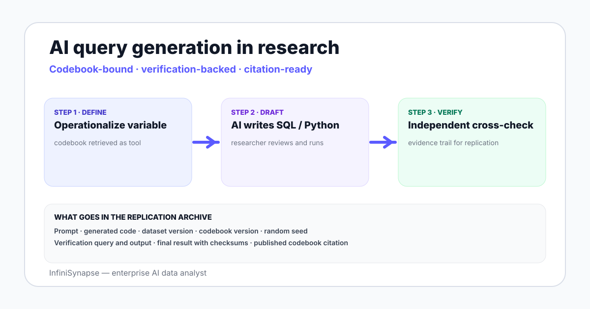

AI-Assisted Query Generation for SQL and Python in Social Science Data Analysis
AI-assisted SQL and Python query generation for social science data analysis — how it changes workflows, where it falls short, and what audit trail researchers need.
AuthorInfiniSynapse Research, product and data architecture team
Published2026-06-28 · Last verified 2026-06-28 · Next review 2026-09-28
Evidence basePublic benchmarks for natural-language-to-code on research datasets (BIRD, Spider), ReAct and Anthropic agent research, ICPSR research data infrastructure, replication crisis literature, field experience with research teams.
Disclosure: Published by InfiniSynapse, which sells an AI data analyst used by some research and policy teams. The guide focuses on the AI-query-generation pattern itself; vendor references appear only where relevant.
TL;DR
AI-assisted query generation drafts SQL and Python from a researcher description; the researcher reviews and runs it. Speeds up the typing, not the thinking.
For social science data analysis, the most useful pattern is paired prompts — describe the variable definition first, then the analysis question — so the generated code aligns with the operationalization.
On public benchmarks (BIRD, Spider) AI text-to-SQL accuracy improves quickly but still trails an experienced analyst on real schemas without retrieval and verification.
For research the bigger issue is reproducibility — the prompt, the generated code, the data version, and the verification step all belong in the replication package.
AI query generation works best inside a data agent loop that retrieves a codebook, plans, runs, verifies, and outputs a citation-ready evidence trail.
AI-assisted query generation drafts SQL and Python from a researcher description and a data dictionary. The researcher reviews and runs it. The win is typing speed; the risk is silent operationalization errors. For social science the right shape is a research data agent that retrieves the codebook, plans, runs, verifies, and emits a citation-ready evidence trail for replication.

How the research workflow shifts when AI drafts the query
Three places the workflow changes:
Variable operationalization. The researcher writes a description (Income = wage income from the past 12 months, excluding investment); the AI proposes a code construction. The review is where domain knowledge concentrates.
Code drafting. The AI types the SQL or Python faster than the researcher; the time savings are real on routine recoding work.
Replication packaging. The agent emits a citation-ready trail — prompt, generated code, dataset version, output checksums — that goes into the replication archive.
The thinking work — picking the variable, defending the operationalization, defending the inference — stays with the researcher.
AI-generated SQL on research datasets
Research datasets typically live in survey-flavored relational schemas (NLSY, GSS, ANES, IPUMS extracts) or in administrative tables with painful variable names. Three patterns where AI SQL helps researchers most:
-- 1. Codebook-aware recoding
-- "Recode income brackets into quintiles for individuals aged 25-64
-- who completed the panel wave"
WITH base AS (
SELECT respondent_id,
CASE income_bracket
WHEN 1 THEN 5000 WHEN 2 THEN 15000 WHEN 3 THEN 30000
WHEN 4 THEN 50000 WHEN 5 THEN 75000 WHEN 6 THEN 100000
WHEN 7 THEN 150000 ELSE NULL END AS income_estimate
FROM survey_panel
WHERE age BETWEEN 25 AND 64
AND panel_status = 'complete'
)
SELECT respondent_id, income_estimate,
NTILE(5) OVER (ORDER BY income_estimate ASC NULLS LAST) AS income_quintile
FROM base;
The AI gets the CASE map and the NTILE shape correct from the prompt. The researcher checks the bracket midpoints against the codebook before trusting the recoding.
AI-generated Python for analysis pipelines
For deeper modeling — regression, propensity score matching, causal inference — Python is still the workhorse. AI is most useful for the boilerplate around the model:
Data loading and cleaning. Pandas merges, type coercions, missing-value handling.
Variable construction. The recodes that turn raw survey responses into analytical variables.
Diagnostic plots. Distribution checks, balance tables, residual plots.
The model specification itself — choice of covariates, identification assumption, robustness checks — remains the researcher's responsibility. Code can be drafted by AI; defending the inference is not delegable.
Where AI query generation falls short for social science
Limit
What happens
Mitigation
Operationalization drift
AI invents a plausible-looking variable definition that does not match the codebook
Bind the codebook as a retrieved tool; review the operationalization explicitly
Survey weights ignored
AI produces unweighted estimates by default
Always specify the weight variable in the prompt; verify against published estimates
Missing-value handling
AI silently drops NAs or codes them as zero
Demand explicit missing-value handling in the generated code
Reproducibility gap
Chat-based AI tools do not version the prompt with the output
Use a data agent that emits a citation-ready trail
Audit and reproducibility for research
The replication crisis literature taught research communities that "we ran some code and got this number" is not enough. The replication package needs the dataset version, the code that ran, the random seed, and the output. AI-generated code adds two elements:
The prompt. The natural-language description used to generate the code.
The verification step. An independent recoding or aggregation that cross-checks the result.
A practice rubric for researchers using AI for query generation
Define the variable before the question. Write a one-paragraph operationalization; have the AI generate code that matches it.
Always pass the survey weight. Explicit in the prompt, verified in the output.
Demand explicit missing handling. NAs are not the AI's call.
Run a verification query. A second independent recoding or aggregation cross-checks the main one.
Save the prompt with the code. The prompt is part of the replication artifact, not metadata.
Cite the codebook version. Codebooks change between waves; the version is part of the result.
AI types the SQL. The researcher operationalizes the variable, defends the inference, and owns the replication package.
Try a research data agent that emits a citation-ready trail
Connect a Postgres or warehouse where your research dataset lives. Bind the codebook as a knowledge base. Ask one operationalization-bound question and watch the plan, SQL, verification step, and source list come back together — ready for the replication archive.
What is AI-assisted query generation for SQL and Python?
AI-assisted query generation is the practice of describing a data question or transformation in natural language and having an AI model draft the SQL or Python code that implements it. The researcher reviews the draft, runs it, and verifies the result. The value is in typing speed and boilerplate code, not in the thinking work of choosing variables or defending inferences.
How is AI query generation useful for social science research?
Most useful for codebook-aware recoding (CASE maps from bracket codes to numeric estimates), variable construction (turning raw survey responses into analytical variables), and diagnostic boilerplate (balance tables, residual plots). Less useful for the model specification itself — the choice of covariates, identification assumptions, and robustness checks remain the researcher responsibility, regardless of who types the code.
What are the limits of AI for research data analysis?
Four real limits: operationalization drift where AI invents a plausible-looking variable definition that does not match the codebook, survey weights ignored by default producing unweighted estimates, missing-value handling that silently drops NAs or codes them as zero, and a reproducibility gap when chat-based AI tools do not version the prompt with the generated output. Each limit has a specific mitigation pattern.
How do I keep AI-generated code reproducible for a research paper?
Treat the prompt as a replication artifact. The replication package needs the dataset version, the codebook version, the prompt used to generate the code, the generated code itself, the random seed, the verification query, and the final output. A data agent that emits a citation-ready evidence trail collects these by default; chat-based tools require manual logging.
Does AI text-to-SQL handle survey datasets well?
It handles the recoding and aggregation shape well when the codebook is bound as a retrieved tool. Without the codebook in the prompt or knowledge base, AI tends to invent plausible bracket midpoints or assume default weighting, both of which silently change the result. Bind the codebook, verify against published estimates for the survey wave, and you get reliable drafts.
Should researchers use AI to write Python analysis code?
Yes for boilerplate — data loading, cleaning, variable construction, diagnostic plots. No for the model specification itself. The model choice, covariate selection, identification strategy, and robustness checks are the inference contribution of the paper; defending them is not delegable to an AI. Treat AI as a fast typist on the routine code and own the analytical decisions yourself.
What is the difference between chat-based AI and a data agent for research?
Chat-based AI generates code per turn without persistent grounding or a verification step. A research data agent retrieves the codebook as a tool, plans the analysis, drafts the code, runs it under a read-only role, runs an independent verification query, and emits a citation-ready evidence trail with prompt, code, output, and verification all linked. For replication-bound research, the data agent shape fits the audit posture better.
Methodology and review notes
Last updated: 2026-06-28 · Next scheduled review: 2026-09-28
This research guide synthesizes public benchmarks for natural-language-to-code on BIRD and Spider, Anthropic agent research and the ReAct paper, ICPSR research data infrastructure documentation, replication crisis literature, and field experience with research and policy teams using AI for data work. The practice rubric reflects observed mistakes and mitigations rather than vendor positioning.
Conflict of interest: InfiniSynapse publishes this guide and sells an enterprise AI data analyst. To reduce bias, the page leads with the topic itself, treats InfiniSynapse as one option among many, and links to external sources for every numeric claim.
Update cadence: Reviewed every 90 days for accuracy and link health.